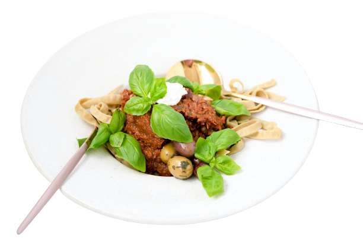

Whatever the question,
Food Valley
is the answer
Everything we do is about you. From chefs who create exciting new flavors, to crew members who know
exactly how you want – we prioritize what you need to get you on your way.
Order Food

About Me
With a flair for exquisite design, self-directed pastry professional. I discovered my
passion for the science of baking and the art of designing. I unites these qualities and has been
surprising guests with my culinary creativity for over two decades.
I often ventures out of Singapore, exploring other Asian countries in search of inspiration to
enhance my pastry skills. The fervent learner constantly upgrades myself with professional courses to
expand my knowledge
Contract Me
Our Recepie
Our list truly runs the gamut of American dining, from legendary burgers, hot dogs, pizzas and fried
chicken to lesser-known regional specialties; from dishes that go back more than a century to ones that
have only been around for a decade but have accomplished a lot since then; from blue-collar classics
whose inventors are long forgotten to fine-dining touchstones created by legendary chefs. These dishes
tell the story of American dining through the years, and they’re all undeniably iconic
900K
You Tube Subscribers